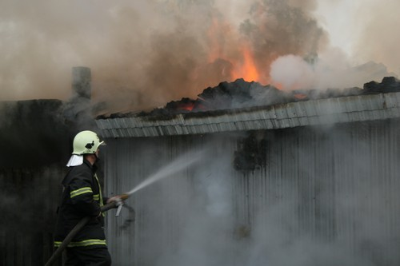
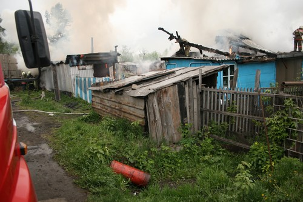
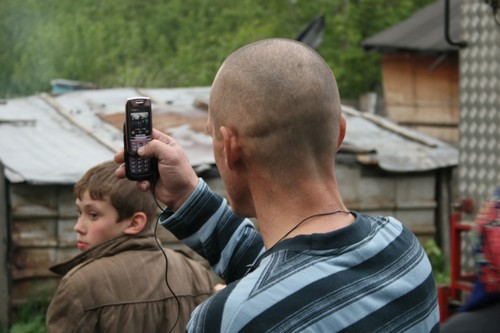
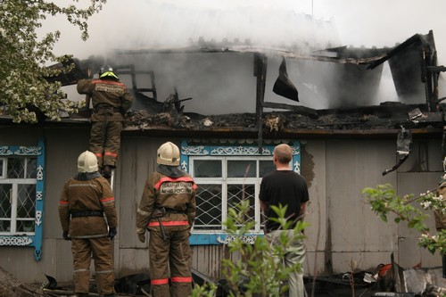
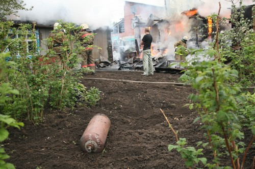
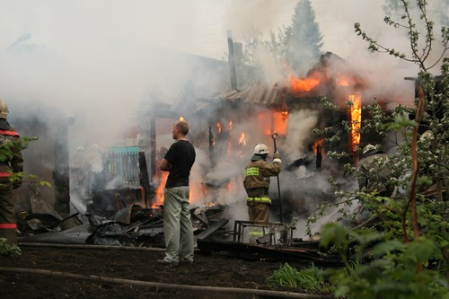

Вчера ездил по городу и увидел столб дыма в районе облбольницы. Вот так всегда. Как только выйду из дома без фотоаппарата — обязательно будет столб дыма. Пришлось съездить домой и уже с фотоаппаратом выдвинуться в сторону «очага возгорания».
Горел дом на 1-й Заречной улице. Многие вообще в последнее время удивляются тому что улица Заречная еще есть (Притомский проспект наступает), но две улицы живут своей жизнь, хотя вчера на них на один дом стало меньше.
Пожар длился довольно долго тушили его по-моему четыре машины дом и баня сгорели практически полностью, соседние дома на пострадали.
Зевак столпилось немало. Причем были не только местные жители, но и специально приехавшие зеваки со всего города.
Два газовых баллона замечено на траве рядом с домом, видимо хозяева не растерялись и спасли район.
Теперь слайды.





